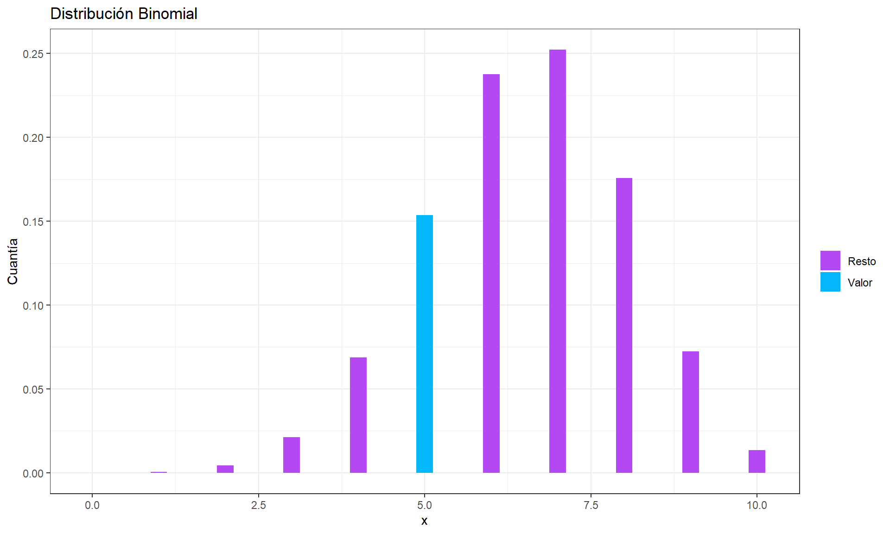
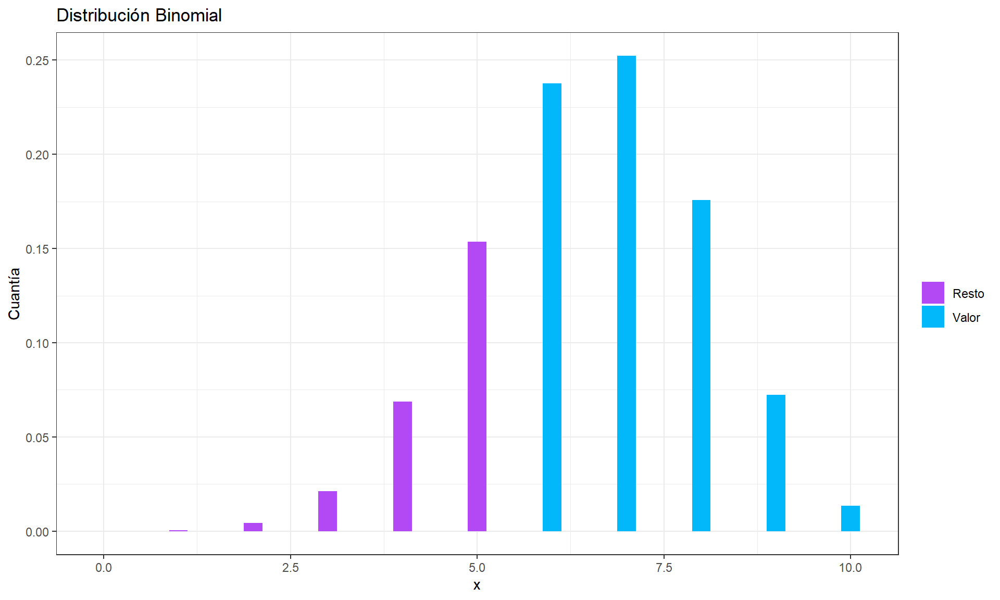
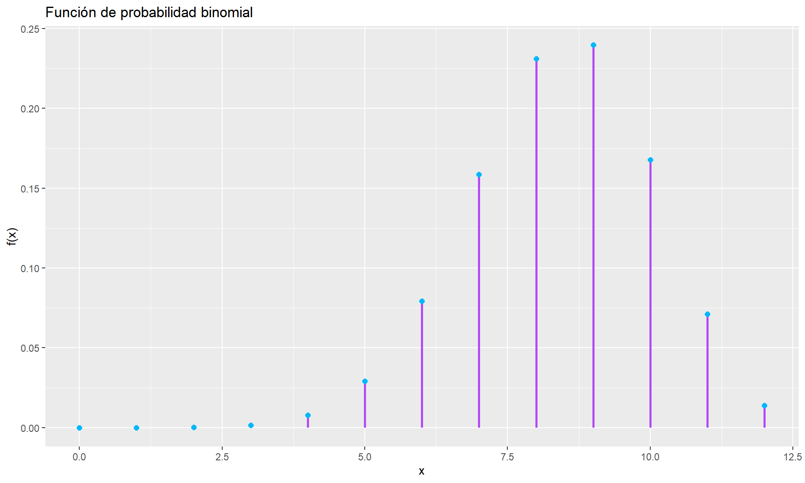

# Verificar, instalar y activar el paquete "tidyverse"if (!require(tidyverse)) {install.packages("tidyverse")}library(tidyverse)# Verificar, instalar y activar el paquete "kableExtra"if (!require(kableExtra)) {install.packages("kableExtra")}library(kableExtra)# Verificar, instalar y activar el paquete "dplyr"if (!require(dplyr)) {install.packages("dplyr")}library(dplyr)
2 .Distribución Binomial
Casi siempre que un investigador se pregunta por la proporción de individuos que verifican una cierta característica dicotómica (estar enfermo o no, ser varón o no, etc.) subyace en el problema una distribución Binomial. Si de una población se toma una muestra de tamaño n y se anota el número X de individuos de ella que sí verifican la característica, entonces la variable aleatoria X sigue distribución Binomial. Asociada a si cada individuo sigue o no la característica de interés, aparece el término probabilidad/proporción (p) que denota la probabilidad de que el individuo presente la característica o la proporción de individuos que presentan la característica en la población. En consecuencia, esta distribución que se representa como B(n, p), puede verse como el número de éxitos en n repeticiones del experimento con probabilidad p, donde el éxito sería sí se verifica la condición y el experimento sería el hecho de comprobar si el individuo cumple la característica en cuestión. Con respecto al cálculo de probabilidades de una variable aleatoria con X \sim \text{Bin}(n, \pi) distribución Binomial, en R se distinguen cuatro funciones:
f(x; n, \pi) = \left\{
\begin{array}{ll}
\binom{n}{x} \pi^x (1 - \pi)^{n - x} & \text{si } x = 0, 1, \dots, n; \\
0 & \text{en otro caso.}
\end{array}
\right.
2.1 .Ejercicios
De acuerdo con un estudio publicado por un grupo de sociólogos de la Universidad de Massachusetts, aproximadamente 65% de los consumidores de Valium en el estado de Massachusetts empezaron a consumirlo a causa de problemas psicológicos. Calcule la probabilidad de que entre los siguientes 10 consumidores entrevistados de este estado:
A. Exactamente 5 comenzaron a consumir Valium por problemas psicológicos.
B. Al menos 6 comenzaron a consumir Valium por problemas psicológicos.
rango =0:ndf_3 =data.frame(x = rango, y =dbinom(rango, size=n, prob=p))ggplot(df_3, aes(x = x, y = y, fill=factor(ifelse(x==5,"Valor","Resto")))) +geom_bar(stat ="identity",width =0.25) +xlab("x") +ylab("Cuantía") +ggtitle("Distribución Binomial") +scale_fill_manual(name ="", values=c("#b349f5","#02b8fa")) +theme_bw()

Grafica inciso B
Ver código
ggplot(df_3, aes(x = x, y = y, fill=factor(ifelse(x>5,"Valor","Resto")))) +geom_bar(stat ="identity",width =0.25) +xlab("x") +ylab("Cuantía") +ggtitle("Distribución Binomial") +scale_fill_manual(name ="", values=c("#b349f5","#02b8fa")) +theme_bw()

Un gobierno local ha implementado una campaña para incentivar la participación ciudadana en las audiencias públicas. Se sabe que aproximadamente el 70% de los ciudadanos que son invitados a participar, efectivamente lo hacen. El número total de ciudadanos invitados a la próxima audiencia será de 12 personas.
Considerando que el evento sigue una distribución binomial, donde el éxito es que un ciudadano participe en la audiencia y el fracaso es que no participe, responde a los siguientes incisos:
¿Cuál es la probabilidad de que exactamente 9 ciudadanos participen en la audiencia pública?
¿Cuál es la probabilidad de que al menos 8 ciudadanos participen en la audiencia pública?
¿Cuál es la probabilidad de que como máximo 6 ciudadanos participen en la audiencia pública?
¿Cuál es la probabilidad de que entre 7 y 10 ciudadanos (inclusive) participen en la audiencia pública?
Ver código
# Definir los parámetros del ejercicion <-12# Número de ciudadanos invitadosp <-0.70# Probabilidad de participaciónx <-0:n # Número de éxitos posibles (de 0 a 12)fx <-round(dbinom(x, n, p), 4) # Calcular las probabilidades de éxito exactoFx <-round(cumsum(fx), 4) # Calcular la probabilidad acumulada# Crear un data frame con los resultadosdf <-data.frame(x, fx, Fx)# Generar la tabla con el estilo deseadokable(df, align ="c") %>%kable_styling("striped", full_width = F) %>%column_spec(1, bold = T) %>%row_spec(0:13, bold = T, color ="#0d0d0d", background ="#eecafc")
x
fx
Fx
0
0.0000
0.0000
1
0.0000
0.0000
2
0.0002
0.0002
3
0.0015
0.0017
4
0.0078
0.0095
5
0.0291
0.0386
6
0.0792
0.1178
7
0.1585
0.2763
8
0.2311
0.5074
9
0.2397
0.7471
10
0.1678
0.9149
11
0.0712
0.9861
12
0.0138
0.9999
Ver código
df_1 <-data.frame(x = x, fx = fx, xend = x, fxend =0)ggplot(df_1, aes(x = x, y = fx)) +geom_segment(aes(xend = xend, yend = fxend), color ="#b349f5", size =1) +geom_point(color ="#02b8fa", size =2) +labs(title ="Función de probabilidad binomial",x ="x",y ="f(x)")

Ver código
# Definir los parámetros del ejercicion <-12# Número de ciudadanos invitadosp <-0.70# Probabilidad de participación# Calcular la probabilidad de que como máximo 6 ciudadanos participenprobabilidad_max_6 <-round(pbinom(6, size = n, prob = p), 4)# Mostrar el resultadocat("La probabilidad de que como máximo 6 ciudadanos participen en la audiencia pública es: ", probabilidad_max_6, "\n")
La probabilidad de que como máximo 6 ciudadanos participen en la audiencia pública es: 0.1178
Ver código
# Parámetros del ejercicion <-10# Número de solicitudes en la muestrap <-0.80# Probabilidad de que una solicitud esté completa y sin erroresx <-0:n # Rango de posibles resultados (de 0 a 10 solicitudes)# Calculamos las probabilidadesfx <-round(dbinom(x, n, p), 4) # Probabilidad de exactamente 'x' éxitosFx <-round(cumsum(fx), 4) # Probabilidad acumulada de 'x' o menos éxitos# Creamos el dataframe para la tabladf <-data.frame(x, fx, Fx)# Cargamos las librerías necesarias para la tabla (si no están instaladas, se deben instalar con install.packages())library(knitr)library(kableExtra)# Generamos la tabla con el estilo deseadokable(df, align ="c", caption ="Tabla de Distribución Binomial (n=10, p=0.80)") %>%kable_styling("striped", full_width = F) %>%column_spec(1, bold = T) %>%row_spec(0:11, bold = T, color ="#0d0d0d", background ="#eecafc")